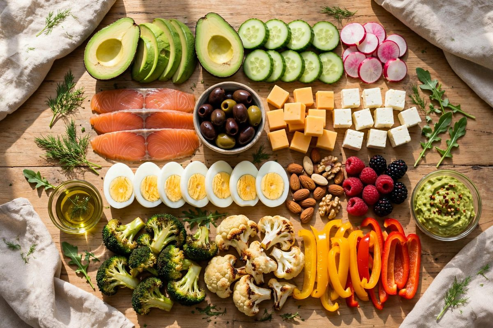

Home › Guides
Low-Carb Foods List: What to Eat and What to Avoid

A good low-carb foods list is the most useful page on this site. Print it, stick it on the fridge, and take it shopping. It answers the question you will ask a hundred times a day: can I eat this? The list below is based on net carbs, which are total carbs minus fibre, and on how nutritious each food is.
Vegetables: eat freely
The best low-carb vegetables grow above the ground. Leafy greens such as spinach, lettuce, and kale have almost no net carbs. Broccoli, cauliflower, courgettes, peppers, mushrooms, green beans, asparagus, and aubergine are all low in carbs and high in fibre and vitamins.
Root vegetables are higher in carbs, so eat them in smaller amounts. Carrots and onions are fine in moderation, but potatoes, sweet potatoes, parsnips, and beetroot are starchy and best avoided on a low-carb plan. Peas and sweetcorn are also higher in carbs than most vegetables.
Protein: the foundation
Meat, fish, and eggs are naturally very low in carbs. Chicken, turkey, beef, lamb, and pork are all good choices. Oily fish such as salmon, mackerel, and sardines add omega-3 fats as well as protein. Eggs are one of the best low-carb foods: cheap, filling, and almost carb-free.
Processed meats such as sausages, bacon, and cured meats can be eaten, but check the label, because some contain added sugar or starch. Choose ones with the shortest ingredient list. Tofu and tempeh are good plant-based options, with about 2 to 3 grams of net carbs per 100 grams.
Fats and dairy
Healthy fats are an important part of low-carb eating. Olive oil, butter, avocado, nuts, and seeds are all good choices. Use olive oil for dressings and butter for cooking. Nuts are nutritious but easy to overeat, so measure a small handful rather than eating from the bag.
Full-fat dairy such as cheese, cream, and Greek yoghurt is low in carbs and filling. Milk is higher in carbs because of its natural sugar, lactose, so use cream in coffee instead. Avoid low-fat dairy products, which often have added sugar to replace the fat.
Foods to avoid
Avoid bread, rice, pasta, noodles, breakfast cereals, potatoes, and flour-based foods. Avoid sugar in all its forms, including honey, syrup, and fruit juice. Avoid sugary drinks, beer, and sweetened coffee drinks.
Be careful with foods that look healthy but are high in carbs: bananas, grapes, mangoes, dried fruit, granola, and most snack bars. Read the label and count the net carbs. A single banana has about 20 grams of net carbs, which can be a large share of a daily allowance.
Building a low-carb plate
A simple way to build a low-carb meal is the plate method. Fill half the plate with non-starchy vegetables, such as leafy greens, broccoli, or courgettes. Fill a quarter with protein, such as chicken, fish, or eggs. Fill the last quarter with healthy fat, such as olive oil, avocado, or nuts. That is the whole meal, and it needs no counting.
An example plate is grilled salmon, roasted broccoli, and a salad with olive oil dressing. Another is chicken thighs with green beans and a spoonful of guacamole. Use the plate method at home and when eating out, and low-carb eating becomes a habit rather than a calculation.
Frequently Asked Questions
What vegetables are lowest in carbs?
Leafy greens, spinach, lettuce, cucumber, courgette, mushrooms and cauliflower are all under 3 g of net carbs per 100 g.
Can I eat fruit on a low-carb diet?
Yes, in small amounts. Berries are the lowest-carb fruit. Bananas, grapes and mangoes are much higher in carbs.
Is cheese allowed on low-carb?
Yes. Most hard cheeses have about 1 g of net carbs per 30 g serving. Eat it in moderation, because it is high in calories.